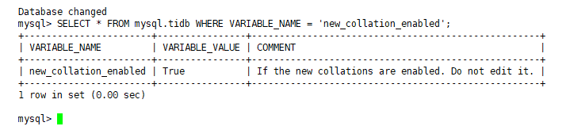

恢复时报错：new_collation_enabled不匹配。
从TiDB v6.0.0版本开始，new_collations_enabled_on_first_bootstrap配置项的默认值由false改为true。BR会备份上游集群的mysql.tidb表中的new_collation_enabled配置项。当上下游集群的此项配置相同时，BR才会将上游集群的备份数据安全地恢复到下游集群中。若上下游的该配置不相同，BR会拒绝恢复，并报此配置项不匹配的错误。
SELECT * FROM mysql.tidb WHERE VARIABLE_NAME = 'new_collation_enabled':
回显示例如下：

SELECT * FROM mysql.tidb WHERE VARIABLE_NAME = 'new_collation_enabled':